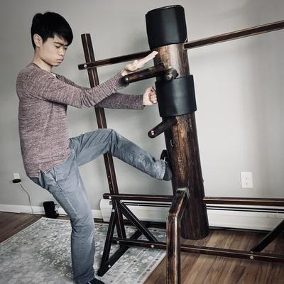

Amherst Wing Chun Club
Casual, beginner-level, free kung fu lessons
Starting April 18!
Saturdays 10:00–11:00 at the Unitarian Meetinghouse in Amherst Center.

Casual, beginner-level, free kung fu lessons
Starting April 18!
Saturdays 10:00–11:00 at the Unitarian Meetinghouse in Amherst Center.
This is a passion project to teach wing chun kung fu in the Amherst, Hadley, and Northampton area. Everyone ages 18–75 is welcome. Please join by messaging me on Signal or email at jennings@amherstwingchun.club.
Every Saturday morning 10:00 in the Social Hall of the Unitarian Meetinghouse in Amherst Center. Add to Calendar (.ics file)
121 N Pleasant St
Amherst, MA 01002
We are not affiliated with the Unitarian Universalist Society of Amherst, though we do appreciate them and they seem like good people.
Please reach out if Amherst is too far and you would attend if only we were based in Hadley or Northampton instead. I would gladly have a second class there if people are interested.
100% free.
I teach for free, that detail is actually important to me. People must also be able to join the club for free. Free is pivotal to my idea of inclusivity. FWIW accessibility via public transportation is also part of my ideals.
The club will have 8 indoor classes every half year. If people donate, we will be able to have more classes. Alternatively, I will survey the regular attendees whether they are comfortable with training outdoors at a public park for free.
Please reach out if you have experience, advice, or recommendations about event spaces, sponsorship, or applying to grants. Donations are accepted by cash or Zelle in-person after class. Alternatively, anonymous donations can be made to the Monero wallet address:
49PdZSfsRpteTDwBfTNFArF7FbPthKSs5KpbJjUDQHLrFxS27Rs7yHUbWDvuSrUx3aBJnNMrHe3rfTx9NWtP4CDNASz8veg
A new style of kung fu was developed by a refugee nun who taught it to another woman in secret. That woman used the art to win a duel against thugs, saving her from being forced into an unwanted marriage. Her name was Wing Chun. The literal translation of the Chinese characters “咏春” means “singing spring.” True or not, this tale depicts how the wing chun style of kung fu is about how the physically weak might defend itself against the strong.
In real life, Wing Chun was made famous internationally first by Bruce Lee, then again by Donnie Yen in his Ip Man series of movies.
Now obviously movie fight scenes are scripted and unrealistic. Below are some clips of me at The Spirit of the Heart's “Open Sparring” event:
Notice the application of wing chun concepts:
No. Wing chun focuses on simple and direct movements, unlike most other kung fu styles and martial arts. In fact, wing chun theory is similar to that of Tai Chi, which you may know of as a common form of exercise for senior communities.
Martial arts schools vary in their teaching methods. I prefer focusing on repetitive partner drills—it is a practical approach for busy people, and less intimidating too. This is in contrast to how traditional martial arts is usually taught. For reference, kung fu or karate lessons typically involve 30 minutes of stretching, calisthenics, and meditation, followed by rehearsal of forms (a.k.a. kata, 套路), which are choreographed sequences of fighting postures. All that is important, but I don't know how to teach those things.
The above video was a beginner-level drill called “junior exercise.” We will practice our way up to learning more advanced, free-form drills such as “lap sao”:| Week # | Title | Details |
|---|---|---|
| Week 1 | Introduction + 2 basic blocks | (1) A verbal introduction to the Chinese culture of kung fu and philosophies of wing chun, e.g. centerline theory. (2) Vertical “日” punch (3) Learn the two basic blocks, pak sao and tan sao. |
| Week 2 | “Junior exercise” drill | Class will start with a warm-up and review of basic blocks. Then we will learn the wing chun stance and integrate it into partner drills. |
| Week 3 | Footwork | Practice same techniques from prior two weeks while simultaneously taking steps forward and backward. |
| Week 4 | “Lap sao” drill, part 1: basics | Learn the “lap sao” drill, a free-style drill focusing on pulling-pushing limbs with yin-yang force and backfist attacks. |
| Week 5 | “Lap sao” drill, part 2: lying palm | Add the “lying palm” attack to the “lap sao” drill, which adds unpredictability and tests your reflexes. |
| Week 6 | “Lap sao” drill, part 3: advanced | Add the “biu sao” (darting fingers) and recovery techniques to the “lap sao” drill. With more possible attacks, this drill begins to simulate the messiness of a real fight. |
| Week 7 | “Siu nim tao” | Learn the “siu nim tao” form: a traditional, meditative exercise with qigong. |
| Week 8 | Flow | Re-discover the “junior exercise” drill with greater context from your training thus far. Integrate “chi sao” (tactile sensitivity) and trapping. |